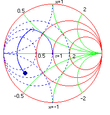

In this example we use simple transmission lines for impedance matching.
Problem: Match an impedance of 10 - j15 to a 50 ohms line operating at 1000 MHz using transmission lines.
Solution: First we assign 10 -j15 as the load termination. The frequency is set to 1000 MHz using the values menu in the schematic window. From the Options Menu change the length units to mm. We begin with a low impedance ( Z0 = 30 ohms) transmission line in series with the load and increase its length until we reach the constant conductance circle. Constant conductance circles can be drawn by using the show admittance function (Admittance Circles) in the display menu of chart window. Finally we use an open circuit transmission line, again with Z0 of 30 ohms, to navigate Z-in to the center of the chart which is at 50 ohms.

Load = 10-j15
Series transmission line T2; Z0 = 30; length = 56.4mm
Shunt open stub O3: Z0 = 30; length = 38.5mm